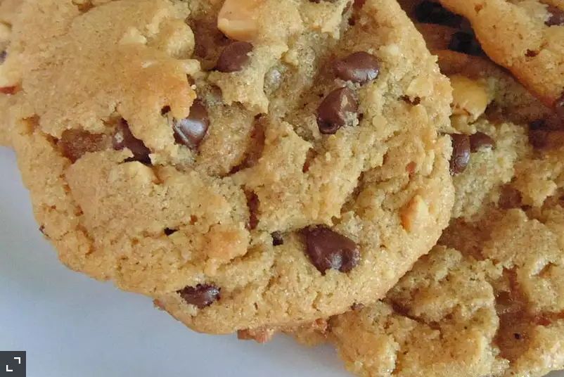

Butter Cookies

This is simple and tasty recipe
Recipe yields 12 to 16 cookies.
It takes about 20 mins.
Ingredients
- 1 cup peanut butter
- 1/2 cup white sugar
- 1/3 cup packed brown sugar
- 1 egg
- 1 teaspoon vanilla extract
- 1/2 teasoon baking soda
- 1/2 cup semisweet chocoalte chips (optional)
Steps
- Preheat oven to 350 degrees F (175 degrees C).
- Beat peanut butter, white sugar, and brown sugar together in a large bowl with an electric mixer until smooth. Stir egg, vanilla extract, and baking soda into peanut butter mixture; stir in chocolate chips.
- Drop mixture by small rounded spoonfuls onto a baking sheet about 2 inches apart.
- Bake in the preheated oven until cookies are flattened and golden, about 8 minutes.